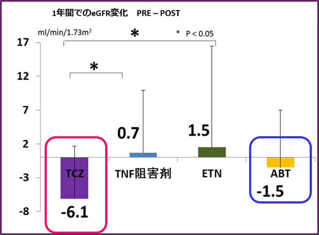

対オレンシア①高齢者
アクテムラ投与患者の腎機能低下は他Bioの患者よりも緩やかであった
関節リウマチ患者の腎機能への生物学的製剤間の影響の差異について
四日市羽津医療センター 小寺 仁先生
BIO製剤の腎機能への影響について製剤間の違いを比較・検討するため、1年間でのeGFR変化を評価した。
また、TCZと、TNF阻害剤（IFX ADA GLM） ETN、ABTと間で、その違いを比較した。
TCZとその他のBIO群との比較（有意差ついた項目）
| TCZ | TNF阻害剤 (p値） | ETN | ABT | |
|---|---|---|---|---|
| CRP | 0.014±0.02 | 0.18±0.18 (0.014) |
0.33±0.6 (0.0016) |
0.57±0.9 (0.015) |
| 赤沈 | 31.2±26.9 | 44.5±27.3 0.346 |
54.4±31.2 (0.049) |
32.7±38.4 0.954 |
| 血清アルブミン | 17.3±6.5 | 4.1±0.4 0.185 |
3.9±0.4 -0.002 |
4.2±0.2 0.584 |
| 血小板 | 17.3±6.5 | 20.5±4.5 (<0.000001) |
22.5±6.3 (<0.000001) |
18.1±4.6 (0.416) |
MTXの投与量
| TCZ | TNF阻害剤 | ETN | ABT | |
|---|---|---|---|---|
| MTX処方率 | 29% | 100% | 76% | 33% |
| MTX処方量mg/w | 2±3.4 | 8.9±3.8 | 5.5±4.5 | 2.8±4.8 |
結果：TCZ群のeGFRの変化はTNF阻害剤群やETN群に比して有意であり、観察期間のCRP値も有意に低かった。

⇒IL-6亢進によってメサンギウム細胞が増殖するが、アクテムラはこれを抑制することで、eGFRの低下を抑制する（eGFRが改善した報告）